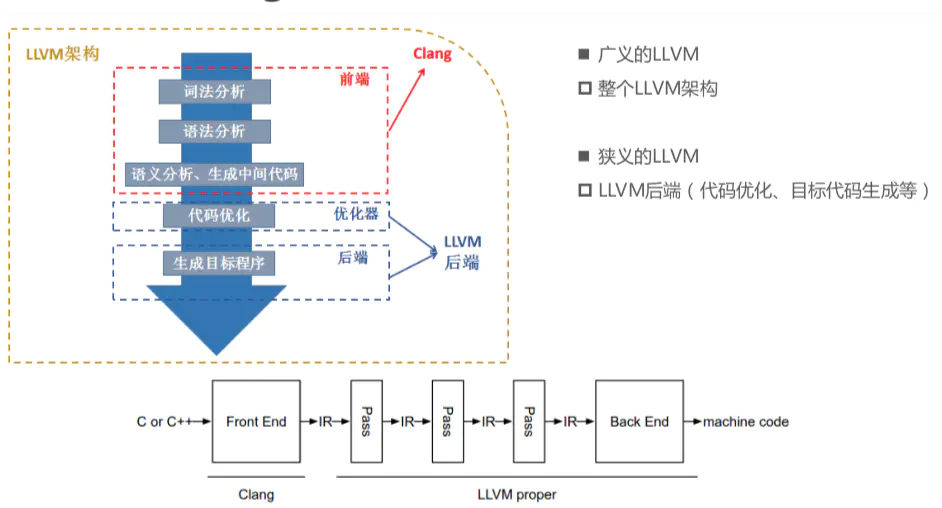
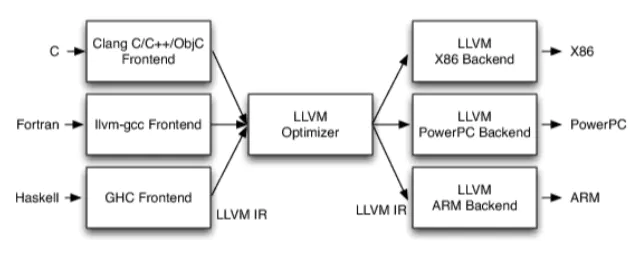
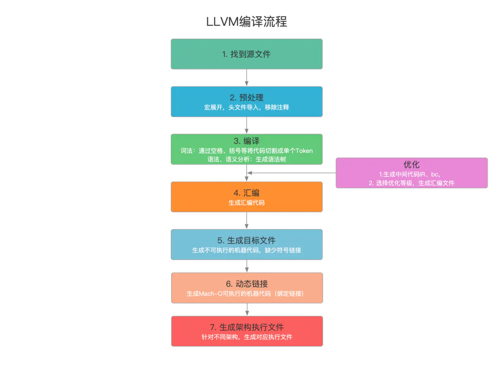

将oc代码转为c/c++源码的方法
xcrun -sdk iphoneos clang -arch arm64 -rewrite-objc -fobjc-arc /Users/szht/Downloads/Test0/Test0/ViewController.m -o /Users/szht/Downloads/Test0/1231232/vc.cpp
也可以换成 iphonesimulator
定义
Clang是一个C、C++、Objective-C语言的轻量级编译器。
说一些我自己的话。
clang是基于llvm架构的编译器。
什么是llvm？
简单来说就是多对一对多的架构。
分为前段 — 优化 — 后端 三个层面
对应
词法分析 语法分析 生成中间代码 — 代码优化 — 生成指定架构可执行文件
支持多种语言编写 例如（oc swift c c++）通过同一编译器（clang）
翻译为系统接受的可执行文件（arm64 x86等等不同框架下的程序）
这个架构的优势在于灵活 拓展性强。
前后独立
添加语言不需要额外修改编译后支持的可执行文件格式。
添加支持的处理器架构 不需要额外添加编程语言的支持。
只需要对llvm的编译器支持进行适配即可。
clang的编译分为前端和后端，前端主要做的是
代码的词法分析语法分析 生成中间代码，
后端为代码的优化 生成目标程序。
（就是下边的那个图）
额外说一句 clang 不支持swift swift使用的编译器是SwiftC
针对于混编的情况 通过桥接文件进行对接
除此之外各编译各的。
大概就这些。
什么是Clang
LLVM项目的一个子项目，基于LLVM架构的C/C++/Objective-C编译器前端。
相比于GCC，Clang具有如下优点
- 编译速度快:在某些平台上，Clang的编译速度显著的快过GCC(Debug模式下编译OC速度比GGC快3倍)
- 占用内存小:Clang生成的AST所占用的内存是GCC的五分之一左右
- 模块化设计:Clang采用基于库的模块化设计，易于 IDE 集成及其他用途的重用
- 诊断信息可读性强:在编译过程中，Clang 创建并保留了大量详细的元数据 (metadata)，有利于调试和错误报告
- 设计清晰简单，容易理解，易于扩展增强

可以将代码进行语言间的编译转换。
基于LLVM架构
Llvm为编译器的架构，clang就是基于这个架构开发的编译器工具，
将编译型语言的代码翻译为机器可执行的c c++ 汇编代码等。

- 不同的前端后端使用统一的中间代码LLVM Intermediate Representation (LLVM IR)
- 如果需要支持一种新的编程语言，那么只需要实现一个新的前端
- 如果需要支持一种新的硬件设备，那么只需要实现一个新的后端
- 优化阶段是一个通用的阶段，它针对的是统一的LLVM IR，不论是支持新的编程语言，还是支持新的硬件设备，都不需要对优化阶段做修改
- 相比之下，GCC的前端和后端没分得太开，前端后端耦合在了一起。所以GCC为了支持一门新的语言，或者为了支持一个新的目标平台，就 变得特别困难
- LLVM现在被作为实现各种静态和运行时编译语言的通用基础结构(GCC家族、Java、.NET、Python、Ruby、Scheme、Haskell、D等)
语法分析 词法分析的详细解析：https://www.jianshu.com/p/692f141d26d5

bitcode
为什么有些sdk会需要关闭bitcode
bonus：
clang 常用指令：
1、-dump-tokens :运行预处理器，拆分内部代码段为各种token
2、-ast-dump :构建抽象语法书AST
3、-emit-llvm :使用LLVM描述汇编和对象文件
4、-fmodules :使用modules的语言特性
5、-fsyntax-only : 防止编译器生成代码，只是语法级别的说明和修改
6、-fobjc-arc: 再ARC环境下，为Objective-C对象生成retain和release的调用
7、-fno-objc-arc: 在MRC环境下使用
8、-rewrite-objc: 将Objective-C源码重写为C++
9、-Xclang: 像Clang编译器传递参数
10、-c: 只运行预处理，编译和汇编步骤
11、-C: 在预处理输出中包含注释
12、-g: 在可执行程勋中包含标准调试信息
13、-l: 在头文件的搜索路径列表中添加dir目录
14、-L: 在库 文件的搜索路径列表中添加dir目录
15、-0: 输出.o文件
16、-S: 生成.s汇编文件
17、-E: 查看预处理结果
18、-ccc-print-phases: 查看编译步骤
19、链接两个.o文件 ：clang xxx.o xxx.0 -Wl,xcrun --show-sdk-path/System/Library/Frameworks/Foundation.framework/Foundation